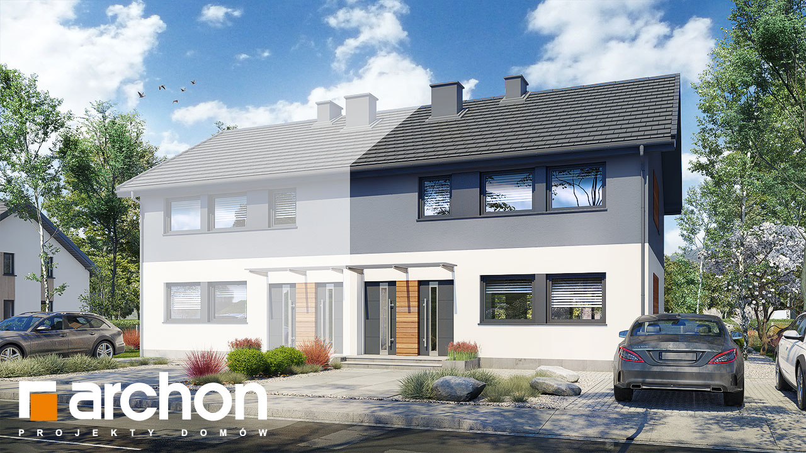
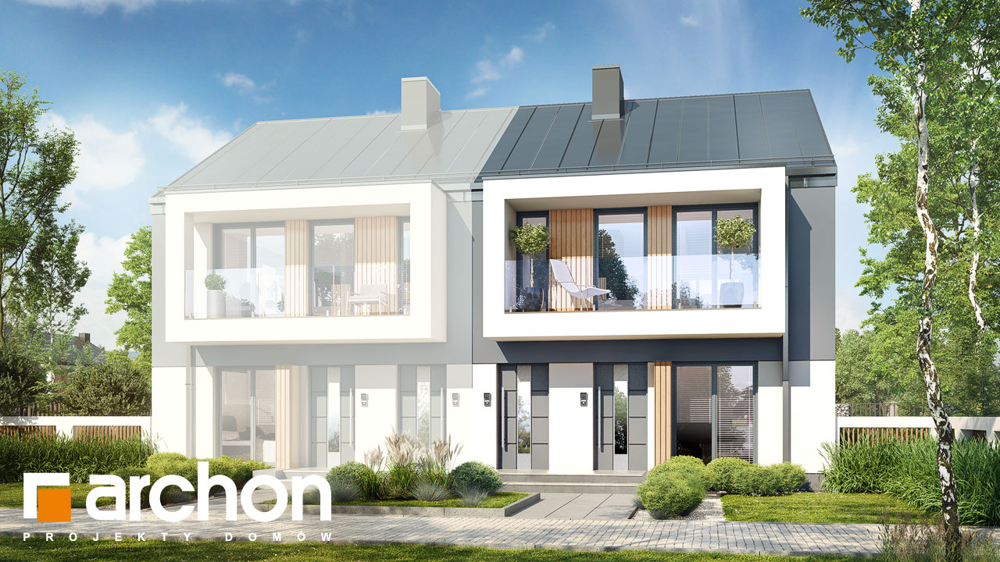
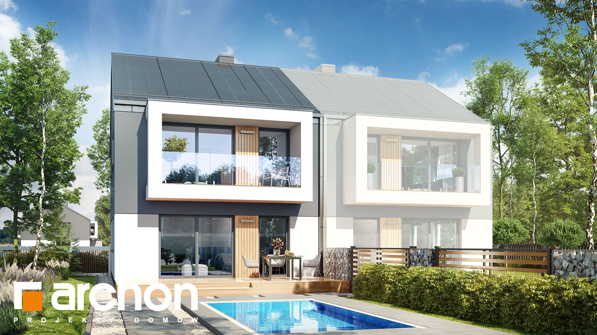
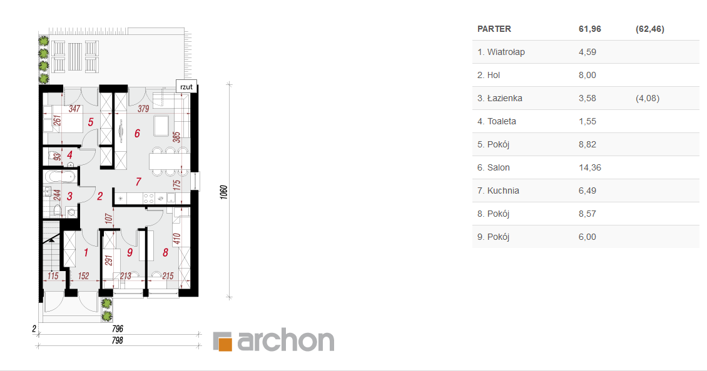
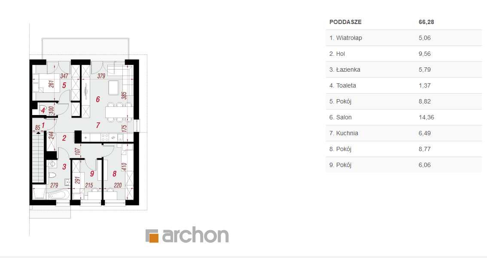
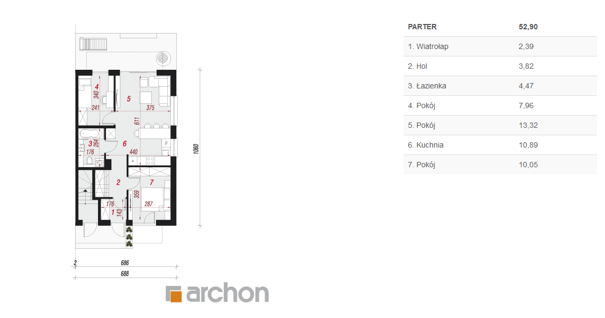

Gozdowo ul. Kasztanowa Domy dwurodzinne w zabudowie bliźniaczej
Projekt domu - wariant 1
Projekt domu - wariant 2




Aktualności (aktualizacja 01.03.2020)
Trwają zapisy na mieszkania w budynkach dwulokalowych przy ulicy Kasztanowej
Termin realizacji: II kwartał 2021 roku
W ofercie:
Interesujący projekt domu dwurodzinnego do zabudowy bliźniaczej, który zwraca uwagę atrakcyjnym, nowoczesnym wykończeniem zewnętrznym. Ciekawym detalem są zaprojektowane w formie loggii balkony, które zaakcentowano, różnicując kolory tynku na elewacji. Klimatycznej naturalności dodaje drewniana okładzina, a dwuspadowy dach, pokryty modną blachą jest idealnym dopełnieniem całości. Dla wariantu 1-go w segmencie zaprojektowano dwa 4-pokojowe lokale (o powierzchni ok. 62 m2 i ok. 66 m2). W wariancie 2-gim każdy segment mieści dwa wygodne 3-pokojowe mieszkania (ok. 53 m2 i ok. 59 m2) zaprojektowane na osobnych kondygnacjach i posiadające niezależne wejścia zewnętrzne. W budynku zastosowano wysoką ściankę kolankową, dzięki której zminimalizowano ilość skosów, zapewniając mieszkańcom poddasza maksimum komfortu. W każdym mieszkaniu znajduje się otwarty na taras lub balkon salon, kuchnia z obszernym półwyspem, który jest wygodnym miejscem do spożywania posiłków oraz dwie sypialnie. Program użytkowy lokali dopełnia łazienka. Atutem projektu jest racjonalne wykorzystanie dostępnej powierzchni, w mieszkaniach uwzględniono możliwość montażu wielu szaf, które zapewnią wygodę przechowywania i ułatwią utrzymanie porządku.
- Mieszkania bezczynszowe
- Własność hipoteczna
- Media (gaz, energia elektryczna, woda)
- Niezależne ogrzewanie piecami gazowymi (c.o, c.w)
- Miejsca parkingowe na podjeździe
- Ogrodzona posesja
Rzuty mieszkań - wariant 1


Rzuty mieszkań - wariant 2

Lokalizacja
Gozdowo
ul. Kasztanowa
- 200 m od Urzędu Pocztowego (2min pieszo)
- 250 m od Przedszkola (3min pieszo)
- 250 m od Szkoły Podstawowej (3min pieszo)
- 500 m od Kościoła (7min pieszo)
- 17 km od Sierpca (20 min samochodem)
- 21 km od Płocka (20 min samochodem lub 40 min autobusem nr 111 Komunikacji Miejskiej Płock)